#include#include #include void main() { int a[10], i; clrscr(); printf("enter array elements:\n"); for(i = 0; i < 10; i++){ scanf("%d", &a[i]);} printf("elements\n"); for(i = 0; i < 10; i++) {printf("%d ", a[i]);} delay(5000); }
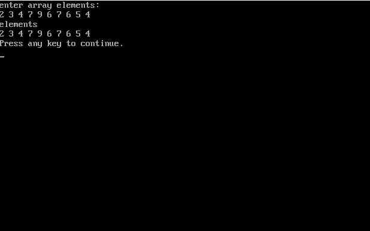
#include#include #include void main() { int a[10],i; clrscr(); printf("enter array elements:\n"); for(i = 0; i < 10; i++) {scanf("%d", &a[i]);} printf("reversed array:\n"); for(i = 9; i >= 0; i--) {printf("%d ", a[i]);} delay(5000);}
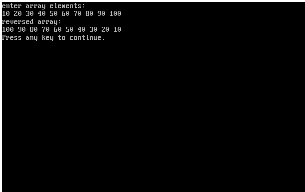
#include#include #include void main() { int a[10], b[10],i; clrscr(); printf("enter array=\n"); for(i = 0; i < 10; i++) { scanf("%d", &a[i]); } for(i = 0; i < 10; i++) {b[i] = a[9-i];} printf("reverse array and copied to another array=\n"); for(i = 0; i < 10; i++) {printf("%d ", b[i]);} delay(5000); }
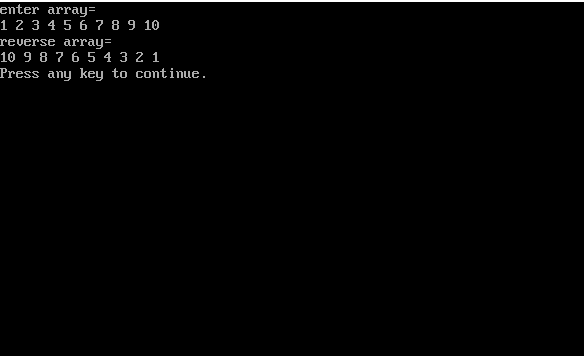
#include#include #include void main() { int a[10],i; clrscr(); printf("enter elements=\n"); for(i = 0; i < 10; i++) {scanf("%d", &a[i]);} printf("even numbers of array are:\n"); for(i = 0; i < 10; i++) { if(a[i] % 2 == 0) {printf("%d ", a[i]);} } delay(5000); }
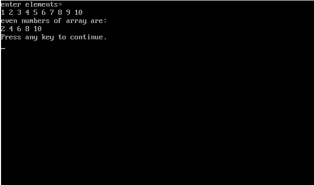
#include#include #include void main() {int a[10], i; clrscr(); printf("elements:\n"); for(i = 0; i < 10; i++) {scanf("%d", &a[i]);} printf("+ve numbers from array are:\n"); for(i = 0; i < 10; i++) {if(a[i] > 0){ printf("%d ", a[i]);} } delay(5000); }
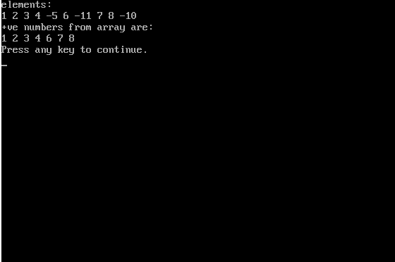
#include#include #include void main() { int a[10],i; clrscr(); printf("elements:\n"); for(i = 0; i < 10; i++) {scanf("%d", &a[i]); } printf("square of array=\n"); for(i = 0; i < 10; i++) {printf("%d ", a[i] * a[i]); } delay(5000); }
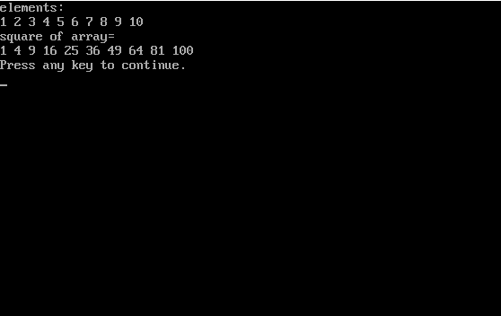
#include#include #include void main() { int a[5], i; clrscr(); printf("enter 5 array elements:\n"); for(i = 0; i < 5; i++) { scanf("%d", &a[i]); } printf("Odd numbers are:\n"); for(i = 0; i < 5; i++) { if(a[i] % 2 != 0) { printf("%d ", a[i]); } } delay(5000); }
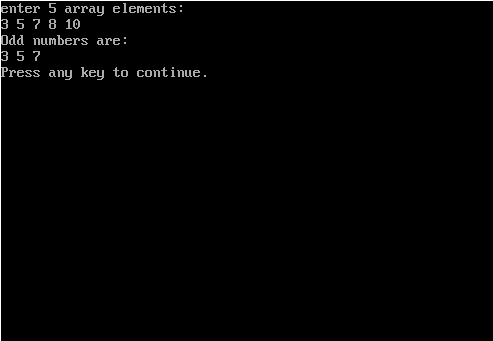
#include#include #include void main() { int a[5], i, add = 0; clrscr(); printf("enter 5 elements:\n"); for(i = 0; i < 5; i++) { scanf("%d", &a[i]); } for(i = 0; i < 5; i++) { add = add + a[i]; } printf("adding all elements = %d", add); delay(5000); }
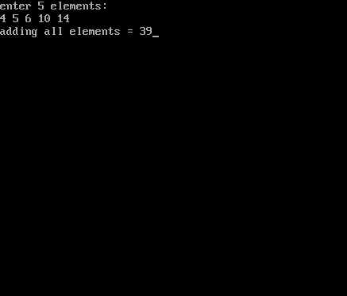
#include#include #include void main() { int a[5], i, num1, done = 0; clrscr(); printf("Enter 5 elements:\n"); for(i = 0; i < 5; i++) { scanf("%d", &a[i]); } printf("Enter number to search: "); scanf("%d", &num1); for(i = 0; i < 5; i++) { if(a[i] == num1) { done = 1; break; } } if(done == 1) { printf("fopund"); } else { printf("not found"); } delay(5000); }
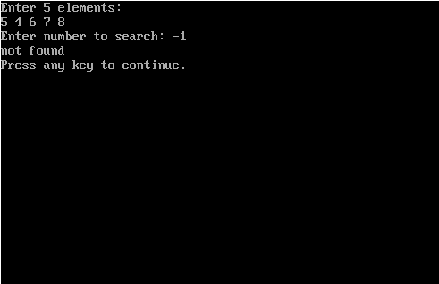
#include#include #include void main() { int a[5], i, j, k; clrscr(); printf("5 elements:\n"); for(i = 0; i < 5; i++) { scanf("%d", &a[i]); } for(i = 0; i < 5; i++) { for(j = i+1; j < 5; j++) { if(a[i] > a[j]) { k = a[i]; a[i] = a[j]; a[j] = k; } } } printf("elements arranged in ascending order=\n"); for(i = 0; i < 5; i++) { printf("%d ", a[i]); } delay(5000); }
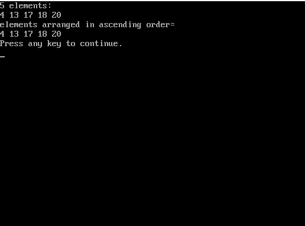
#include#include #include void main() { int a[10],i, maximum; clrscr(); printf("elements:\n"); for(i = 0; i < 10; i++) { scanf("%d", &a[i]); } maximum = a[0]; for(i = 1; i < 10; i++) { if(a[i] > maximum) { maximum = a[i]; } } printf("maximum array element= %d", maximum); delay(5000); }
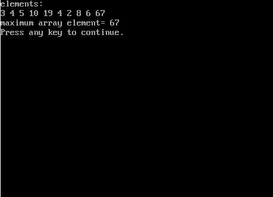
#include#include #include void main() { int a[10],i, minimum; clrscr(); printf("elements:\n"); for(i = 0; i < 10; i++) { scanf("%d", &a[i]); } minimum = a[0]; for(i = 1; i < 10; i++) { if(a[i] < minimum) { minimum = a[i]; } } printf("minimum element in array = %d", minimum); delay(5000); }
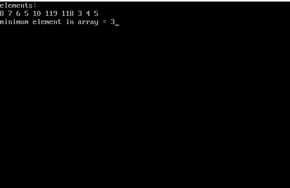